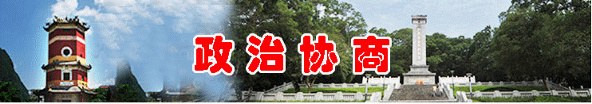
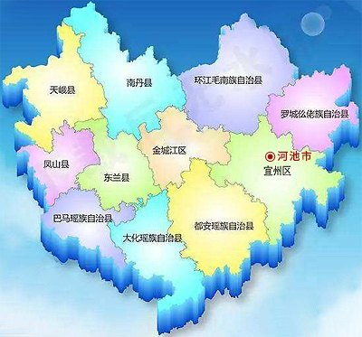

跳到主要内容
中国人民政治协商会议河池市委员会
适老化
A-
默认
A+
无障碍
暂停动效
政 协
广西河池政协网
中国人民政治协商会议河池市委员会
标题＋正文
仅标题
搜索
广西河池政协网
政协动态
更多>>

时政要闻
更多>>
政协会议
更多>>
专委会工作
更多>>
党派团体
更多>>
理论研究
更多>>
图片新闻
更多>>
委员之窗
更多>>
县（区）政协
更多>>

工作动态
2026
来稿排名（前五）
全部排名
专题
更多>>
河池风光
更多>>
网站链接